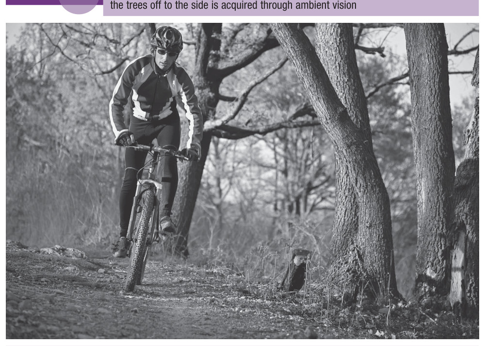
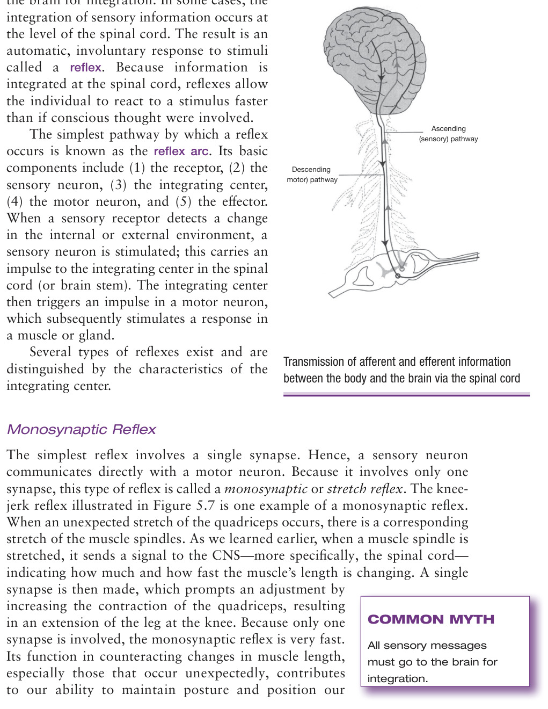
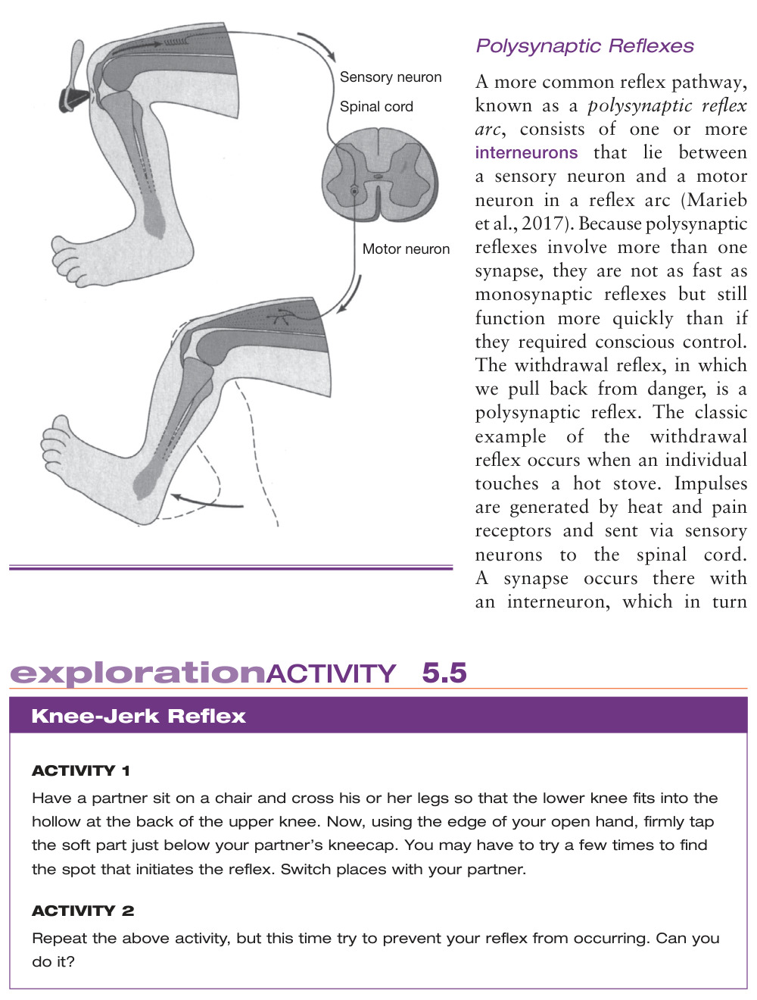
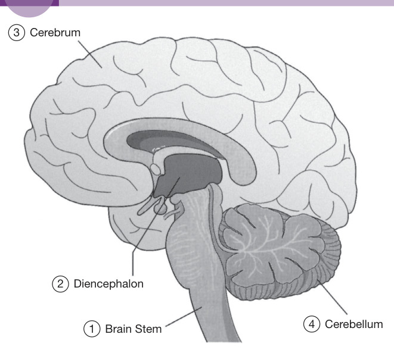
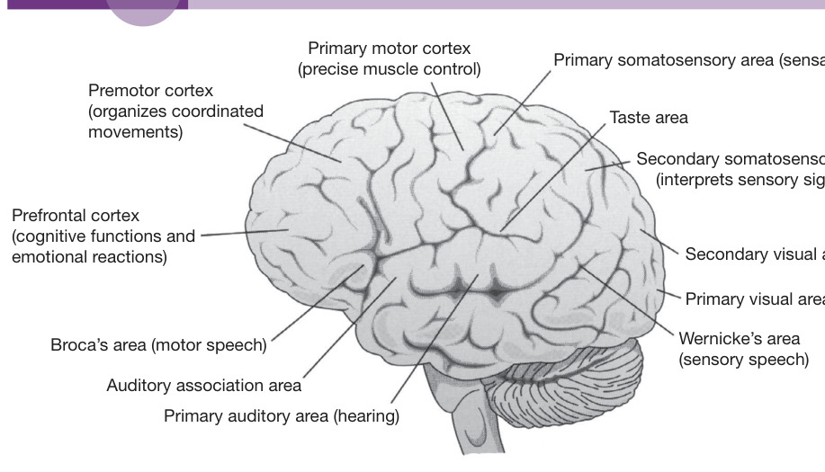

Chương 5 — Cơ Chế Thần Kinh: Đóng Góp Và Kiểm Soát
Đó có vẻ là một pha chơi bình thường trong trận mở màn mùa giải của đội Buffalo Bills, nhưng một cầu thủ đã ngã xuống. Các đội ngũ y tế lập tức lao vào sân. Tin tức không mấy tốt lành. Hậu vệ biên (tight end) Kevin Everett được đưa cấp tốc đến bệnh viện; sau đó có thông tin cho biết anh đã bị gãy và trật khớp cột sống cổ khi đang cố thực hiện một pha tắc bóng. Các báo cáo ban đầu cho rằng khả năng anh đi lại trở lại là rất thấp. Nhưng vào ngày 23 tháng 12 năm 2007, bốn tháng sau tai nạn, Everett đã lần đầu tiên đi lại trước công chúng tại sân vận động Ralph Wilson, ngay trước trận đấu sân nhà cuối cùng của Bills gặp New York Giants. Tháng 7 năm 2008, tại lễ trao giải ESPY, anh nhận được tràng pháo tay đứng dậy khi bước lên sân khấu để nhận Giải Jimmy V cho Tin thần Kiên cường. Dù anh sẽ không bao giờ hồi phục hoàn toàn 100 phần trăm, Kevin Everett đã từ chối từ bỏ hành trình hồi phục của mình.
HỆ THẦN KINH
Hệ thần kinh chịu trách nhiệm về các quá trình làm nền tảng cho sự chuẩn bị, thực hiện và kiểm soát vận động. Hệ này có thể được chia thành hai thành phần chính: hệ thần kinh trung ương (CNS) và hệ thần kinh ngoại vi (PNS). Trong CNS — gồm não và tủy sống — thông tin cảm giác được tích hợp, các quyết định được đưa ra, và tín hiệu được tạo ra rồi gửi đến các cơ quan thực hiện (cơ và tuyến) để thực hiện đáp ứng. PNS chủ yếu gồm các dây thần kinh kéo dài từ não và tủy sống, nối liền cơ thể với CNS. PNS có thể được chia tiếp thành một bộ phận cảm giác hay hướng tâm (afferent), phát hiện những thay đổi của môi trường và dẫn các xung thần kinh từ các thụ thể cảm giác khác nhau về phía CNS, cùng với một bộ phận vận động hay ly tâm (efferent), truyền xung đi từ CNS đến các cơ quan thực hiện.
Thụ Thể Cảm Giác
Chúng ta liên tục bị dội bom bởi các kích thích, được phát hiện qua những thành phần của hệ thần kinh gọi là thụ thể cảm giác. Có vô số dạng kích thích, cũng như nhiều loại thụ thể cảm giác, mỗi loại nhạy cảm với một kích thích riêng. Một cách hữu ích để phân loại các thụ thể này là theo vị trí, hoặc cụ thể hơn là theo vị trí của kích thích mà chúng đáp ứng. Thụ thể ngoại thụ (exteroceptor) phát hiện kích thích bên ngoài cơ thể và cung cấp thông tin về môi trường. Chúng nằm ở hoặc gần bề mặt cơ thể, gồm các thụ thể cho áp lực, đau, chạm, nhiệt độ, rung động, thính giác, thị giác, khứu giác và vị giác. Thụ thể nội thụ (interoceptor) phát hiện kích thích từ các tạng bên trong và cung cấp thông tin về môi trường nội tại, dẫn đến những cảm giác như đói và buồn nôn. Cuối cùng, thụ thể tự thân (proprioceptor) nằm trong cơ, gân, khớp và tai trong, cung cấp thông tin về vị trí và vận động của cơ thể bằng cách phát hiện những thay đổi về sức căng cơ, vị trí khớp và thăng bằng.
Đóng Góp Của Cảm Giác Vào Vận Động
Thông tin mà các thụ thể cảm giác chuyển đến CNS để xử lý và giải mã cho phép chúng ta tương tác với môi trường. Đặc biệt quan trọng trong việc tiếp thu và thực hiện các kỹ năng vận động là thị giác và cảm giác tự thân. Chúng ta sẽ tiếp tục khám phá cách hai nguồn thông tin này góp phần vào việc lựa chọn một vận động, điều chỉnh vận động đó, và thậm chí là hiệu chỉnh nó khi cần thiết.
THỊ GIÁC
Trong số vô số thụ thể cảm giác của chúng ta, hệ thị giác chiếm ưu thế. Trên thực tế, như được minh họa trong Hoạt động Khám phá 5.1, sự phụ thuộc của chúng ta vào thị giác mạnh đến mức chúng ta có thể bỏ qua thông tin từ các thụ thể cảm giác khác để ưu tiên nó (Lee & Aronson, 1974). Sự chiếm ưu thế của hệ thị giác còn được phản ánh qua ước tính rằng 70 phần trăm thụ thể cảm giác của cơ thể người nằm ở mắt. Hơn nữa, người ta cho rằng 40 phần trăm vỏ não tham gia vào một khía cạnh nào đó của việc xử lý thông tin thị giác (Marieb, Wilhelm, & Mallatt, 2017). Vì vậy, không có gì ngạc nhiên khi sự quan tâm đến vai trò của thị giác trong việc tạo ra các vận động có kỹ năng không chỉ gia tăng mà còn dẫn đến sự hình thành một ngành nghiên cứu riêng gọi là thị giác thể thao (sports vision), tập trung điều tra những đóng góp của thị giác cho hiệu suất và nhấn mạnh chăm sóc thị giác, chỉnh sửa thị giác, tăng cường thị giác cùng huấn luyện hiệu suất, và chấn thương (Erickson, 2007). Có thể tìm thêm thông tin về thị giác thể thao trên trang web của Hiệp hội Thị giác Thể thao Quốc tế tại https://www.sportsvision.pro/ .
Khả năng nhìn rõ các vật ở những khoảng cách khác nhau và trong nhiều điều kiện ánh sáng khác nhau phụ thuộc vào hoạt động của một cấu trúc phức tạp nằm bên trong và quanh mắt chúng ta, như thể hiện trong Hình 5.1. Sau khi đi vào mắt, các tia sáng được điều chỉnh và hội tụ lên võng mạc, tạo thành một hình ảnh được chuyển đổi thành các xung thần kinh nhờ những tế bào nhạy sáng gọi là thụ thể quang học. Có hai loại thụ thể quang học: que và nón. Que nhiều hơn, không phát hiện bước sóng (màu sắc), và chuyên cho thị giác trong ánh sáng yếu. Chúng cho phép chúng ta nhìn thấy hình dạng và chuyển động, đồng thời phân biệt các sắc thái sáng tối khác nhau, khiến chúng trở thành thụ thể chính dùng cho thị giác ban đêm. Ở chiều ngược lại, nón hoạt động tốt nhất trong ánh sáng mạnh và chuyên cho thị giác màu cùng độ sắc thị giác (visual acuity — độ nét của thị giác). Nón tập trung dày đặc nhất ở điểm vàng (fovea), vùng có độ sắc thị giác tối đa. Với vị trí của điểm vàng, thị giác của chúng ta trở nên rõ và sắc nhất khi nhìn trực tiếp vào một vật.
Các tín hiệu điện do thụ thể quang học tạo ra được gửi đến não qua dây thần kinh thị giác. Tại một điểm gọi là giao thoa thị giác (optic chiasm), một số sợi từ mỗi dây thần kinh thị giác bắt chéo nhau, như minh họa trong Hình 5.2. Nhờ sự bắt chéo này, cảm giác thị giác từ phía bên trái của trường thị giác được gửi sang phía bên phải của não để xử lý, trong khi cảm giác từ phía bên phải được gửi sang phía bên trái.

Hình 5.1: Các cấu trúc cơ bản của mắt — Mống mắt, Võng mạc, Thủy tinh thể, Giác mạc, Ánh sáng đi vào, Điểm vàng, Dây thần kinh thị giác.

Hình 5.2: Các trường thị giác của mắt và những đường dẫn thần kinh liên quan — Võng mạc, Giao thoa thị giác, Dây thần kinh thị giác, Vỏ não thị giác, Trường thị giác phải, Trường thị giác trái.
Hoạt Động Khám Phá 5.1: Ưu Thế Thị Giác
Hoạt động 1
Thiết bị cần có:
- Bút chì
- Gương
- Một miếng bìa carton (20 x 20 cm hoặc 8″ x 8″)
Quy trình:
Hãy đặt một chiếc gương sao cho sơ đồ bên dưới có thể nhìn thấy trong gương. Giờ đặt đầu bút chì của bạn vào giữa hai đường. Bạn có thể bắt đầu ở bất kỳ đâu. Dùng miếng bìa carton che bàn tay đang cầm bút để bạn chỉ có thể thấy bàn tay và chuyển động của mình qua chiếc gương trước mặt. Chỉ dùng hình ảnh trong gương, hãy lần theo sơ đồ bằng cách di chuyển bút chì quanh hình mà luôn nằm giữa hai đường. Bạn có thể đi theo hướng bất kỳ.
Bạn làm thế nào? Bạn có thể giữ bút trong hai đường và di chuyển quanh hình một cách hiệu quả không?
Hoạt động 2
Bạn sẽ cần một người bạn cùng tham gia hoạt động này. Hãy giang thẳng hai tay về phía trước sao cho song song với sàn nhà. Giờ bắt chéo hai tay qua nhau. Từ tư thế đó, xoay lòng bàn tay để hướng vào nhau và đan các ngón tay lại. Kéo hai tay xuống và về phía ngực. Tiếp tục xoay cho đến khi các khớp đốt ngón tay hướng lên trời.
(tiếp tục)
Khi đã vào tư thế, hãy yêu cầu người bạn chỉ vào một ngón tay của bạn. Điều quan trọng là người đó chỉ chỉ vào ngón tay chứ không chạm vào nó. Nhiệm vụ của bạn chỉ đơn giản là cử động ngón tay mà người bạn đã chỉ vào.
Bạn có nghĩ kết quả sẽ khác đi nếu người bạn chạm vào ngón tay cần cử động trong khi mắt bạn nhắm lại không? Hãy thử xem.
Trong cả hai hoạt động này, một xung đột cảm giác giữa thị giác và cảm giác tự thân đã được tạo ra. Thị giác của chúng ta chiếm ưu thế đến mức ngay cả khi biết thông tin thị giác đang nhận được là không chính xác — chẳng hạn như khi hình ảnh bị đảo ngược trong gương — chúng ta vẫn thường dựa vào nó. Hệ quả là hiệu suất kém đi. Lee và Aronson (1974) đã chứng minh sự chiếm ưu thế thị giác trong nghiên cứu về bức tường di chuyển. Các đối tượng đứng trong một căn phòng đặc biệt nơi bức tường có thể di chuyển nhưng sàn nhà vẫn cố định. Nghiên cứu phát hiện rằng các đối tượng đã điều chỉnh tư thế để bù đắp cho những thay đổi trong thông tin thị giác dù thông tin tự thân không hề thay đổi. Kết quả của nghiên cứu này không chỉ ủng hộ quan niệm về sự chiếm ưu thế thị giác mà còn cung cấp cái nhìn sâu sắc về vai trò của thị giác trong việc duy trì tư thế.
Thị Giác Tiêu So Với Thị Giác Ngoại Vi
Sự tồn tại của hai đường dẫn thị giác riêng biệt đến não đã dẫn đến giả thuyết rằng có hai hệ thống thị giác riêng biệt nhưng hoạt động song song. Hệ tiêu (focal) liên quan đến điểm vàng, có chức năng nhận diện các vật chủ yếu nằm ở vùng trung tâm của trường thị giác. Nói cách khác, nó đóng vai trò “cái gì là cái gì” trong việc tổ chức và thực hiện vận động. Thị giác tiêu hoạt động dưới sự kiểm soát có ý thức (tự nguyện) và do đó “phải được hướng nhanh chóng đến những bộ phận (có khả năng) ‘có ý nghĩa’ nhất của [trường] thị giác, để các vật nằm ở đó có thể được nhận diện với độ trễ tối thiểu” (Müller & Krummenacher, 2006). Chức năng của nó bị cản trở trong điều kiện ánh sáng yếu.
Ngược lại, hệ ngoại vi (ambient) hoạt động ở mức dưới ý thức, được cho là chịu trách nhiệm về định vị và định hướng không gian. Nó đóng vai trò “tôi ở đâu/đối tượng ở đâu” trong việc tổ chức và thực hiện vận động, cung cấp thông tin về tốc độ và hướng mà bạn đang di chuyển, sự ổn định và thăng bằng của các vận động, chuyển động của các vật khác trong môi trường, cùng thông tin về thời điểm tiếp xúc (time to contact) (Wrisberg, 2007). Hệ quả là thị giác ngoại vi đóng vai trò then chốt trong việc dẫn mắt các vận động như với và nắm, cũng như kiểm soát tư thế, di chuyển và các hành động đón bắt. Khác với thị giác tiêu, nó liên quan đến toàn bộ võng mạc, gồm cả trường thị giác trung tâm lẫn ngoại vi, và không bị ảnh hưởng bởi sự thay đổi mức độ ánh sáng.
Trong lúc vận động, rất có thể chúng ta xử lý đồng thời thông tin từ cả hai hệ thống. Ví dụ, khi đạp xe leo núi qua một khu rừng, người đi xe hiếm khi để ý đến loại cây ở bên đường,

Hình 5.3: Một người đi xe đạp leo núi dùng thị giác tiêu để nhận biết những thay đổi trên đường mòn, trong khi nhận biết về các cái cây ở hai bên được tiếp nhận qua thị giác ngoại vi.
nhưng anh ta cần biết những cái cây đó ở đâu để tránh va chạm và đi theo đường mòn thành công. Thị giác ngoại vi hỗ trợ người đi xe trong nhiệm vụ này vì nó cho phép điều chỉnh nhanh chóng các vận động nhờ xử lý tự động thông tin trong trường thị giác thông qua dòng quang học (optic flow). Đồng thời, người đi xe dùng thị giác tiêu để nhận biết những thay đổi trên đường mòn, chẳng hạn như một cái cây đổ ngang đường hay một người đi xe đang ở phía trước. Nó thay đổi từng khoảnh khắc tùy theo quá trình tìm kiếm thị giác mà người đi xe áp dụng để tập trung vào các đặc điểm cụ thể trong môi trường. Khả năng nhận diện các vật này của người đi xe sẽ bị cản trở do độ nhạy tiêu giảm khi rừng rất rậm hoặc kính mát của anh ta quá tối. Hãy thử Hoạt động Khám phá 5.2 để trải nghiệm sự khác nhau giữa thị giác ngoại vi và thị giác tiêu.
Thị Giác Và Hiệu Suất
Thị giác được dùng trong mọi khía cạnh của hiệu suất. Chúng ta không chỉ dùng nó để phát hiện các kích thích môi trường, rồi dùng những kích thích đó để đưa ra quyết định vận động; nó còn cung cấp phản hồi quan trọng mà chúng ta dùng để dẫn dắt hành động của mình. Vì vậy, vai trò của các năng lực thị giác khác nhau trong hiệu suất rất đáng được khám phá.
Ưu Thế Mắt
Thông tin không được xử lý và truyền đến não như nhau ở cả hai mắt. Một trong hai mắt của bạn — mắt chiếm ưu thế — thực hiện những hoạt động này nhanh hơn vài mili giây. Những người có mắt chiếm ưu thế cùng phía cơ thể với tay chiếm ưu thế được coi là ưu thế cùng phía, trong khi những người có mắt chiếm ưu thế ở phía đối diện với tay chiếm ưu thế được coi là ưu thế chéo. Hoạt động Khám phá 5.3 cung cấp một cách đơn giản để xác định mắt nào chiếm ưu thế.
Ưu thế mắt đã nhận được sự chú ý liên quan đến hiệu suất đánh bóng trong bóng chày và bóng mềm. Người ta cho rằng những người đánh bóng có ưu thế chéo có lợi thế vì mắt chiếm ưu thế của họ gần và thẳng hàng hơn với người ném bóng. Dù nghiên cứu chưa xác nhận nhận định này (Milne, Buckholz, & Cardenas, 1995), việc quay đầu để cả hai mắt nhìn rõ quả bóng đã được đề xuất (Knudson & Kluka, 1997). Tuy nhiên, đã có bằng chứng về lợi thế của ưu thế chéo trong các môn đối kháng như đấu kiếm, quyền anh và bóng bàn (Azémar, Stein, & Ripoll, 2008). Các nhà nghiên cứu cho rằng mối quan hệ đối bên giữa mắt chiếm ưu thế và tay đáp trả (ưu thế chéo) tạo ra đường dẫn trực tiếp hơn đến vùng vận động của não; điều này khác với mối quan hệ cùng bên (ưu thế cùng phía), nơi phải xảy ra sự chuyển giao giữa hai bán cầu, đòi hỏi thêm thời gian xử lý (Azémar et al., 2008).
Hoạt Động Khám Phá 5.2: Thị Giác Ngoại Vi So Với Thị Giác Tiêu
Hoạt động 1
Hãy thử đi lại quanh phòng trong khi đọc cuốn sách này. Bạn sẽ có thể làm được điều đó mà không va vào đồ đạc nhờ sự phối hợp của thị giác tiêu và thị giác ngoại vi. Bạn dùng thị giác tiêu để đọc, trong khi thị giác ngoại vi cho phép bạn xác định chướng ngại vật và di chuyển an toàn trong phòng.
Hoạt động 2
Giờ hãy thực hiện lại nhiệm vụ khi đeo một cặp kính mát. Cặp kính mát đã ảnh hưởng thế nào đến hiệu suất của bạn? Làm thế nào để giải thích những kết quả này?
Hoạt động 3
Cho hoạt động cuối cùng, bạn sẽ cần một tờ giấy có ba lỗ. Giữ tờ giấy theo chiều ngang cách mặt khoảng một inch để bạn nhìn qua lỗ ở giữa. Quấn phần còn lại của tờ giấy ra phía sau để chạm vào hai bên đầu. Giờ hãy đi lại quanh phòng lần nữa. Hãy giải thích kết quả.
Nguồn: Shea et al., 1993
Hoạt Động Khám Phá 5.3: Ưu Thế Mắt
Tìm một vật nhỏ, chẳng hạn như một chiếc đồng hồ, trên tường. Đứng ngay trước vật đó, cách khoảng 10 feet. Khi đã ở vị trí này, hãy dùng tay tạo một cửa sổ tam giác nhỏ bằng cách chồng ngón cái và các ngón tay lên nhau. Duỗi hai tay về phía bức tường sao cho bạn nhìn thấy vật qua cửa sổ tam giác của mình, như trong hình minh họa. Giờ hãy nhắm một mắt rồi mở ra. Lặp lại với mắt kia. Mắt chiếm ưu thế là mắt mà vật vẫn nằm trong cửa sổ tam giác.
Spotting (Định Tầm Nhìn)
Spotting là kỹ thuật được dùng khi thực hiện các kỹ năng xoay người (ví dụ trong múa, nhảy cầu, thể dục dụng cụ và trượt băng nghệ thuật) nhằm giảm chóng mặt liên quan đến việc xoay và giúp người thực hiện giữ được phương hướng. Trong spotting, sự xoay đầu bị trì hoãn so với sự xoay của cơ thể. Điều này đạt được bằng cách dồn hoặc cố định sự chú ý thị giác vào một điểm cụ thể. Một khi cơ thể của cá nhân đã quay đến mức bắt đầu mất dấu mốc đó, đầu sẽ nhanh chóng quay sang phía đối diện để tái tập trung vào điểm mục tiêu.
Để biết thêm thông tin và các bài tập học cách spotting, truy cập https://ballroomdancers.com/Learning_Center/view_article.asp?artID=49281 .
Di Chuyển
Để di chuyển an toàn qua các địa hình khác nhau, thị giác cung cấp thông tin được dùng để điều chỉnh việc đi lại cả từng bước một lẫn trong việc lập lộ trình (Patla, 1997). Khi chúng ta đi lại trong thế giới của mình, các vật và bề mặt trong trường thị giác trôi chảy quanh ta. Ví dụ, khi bạn lái xe tiến đến và đi qua một tấm biển, tấm biển dường như to dần khi nó di chuyển từ trung tâm tầm nhìn ra hai bên, cho đến khi không còn nằm trong tầm nhìn nữa. Chuyển động thị giác được cảm nhận này của các vật khi người quan sát di chuyển tương đối so với chúng được gọi là dòng quang học. Dòng quang học giúp chúng ta đánh giá mình gần các vật đến mức nào và tiến đến chúng nhanh thế nào, đồng thời chúng ta dựa vào nó để dẫn dắt việc di chuyển (Gibson, 1950; Warren et al., 2001).
Chúng ta cũng dựa vào chức năng chuyển tiếp (feedforward) của thị giác trong điều chỉnh di chuyển. Như Vickers (2007) đã lưu ý, “trong lúc di chuyển, trường thị giác phía trước thay đổi liên tục, và trong mỗi trường thị giác có một số mục tiêu và vị trí thị giác cần được chú ý để đi lại an toàn” (tr. 144). Điều khiển chuyển tiếp cho phép thông tin, chẳng hạn như kích thước của một vật hoặc chi tiết của địa hình, được gửi đi trước chuyển động nhằm chuẩn bị hoặc điều chỉnh chuyển động từ trước. Ví dụ, khi một người đi lên một ngọn đồi dốc, anh ta điều chỉnh độ dài sải chân, độ nghiêng cơ thể và sự vung tay từ trước để vượt qua địa hình và độ dốc của ngọn đồi.
Điều khiển chuyển tiếp cũng được dùng cả để tiếp xúc lẫn để tránh các vật. Lee, Lischman và Thomson (1982) đã chứng minh cách các vận động viên nhảy xa dùng tau để điều chỉnh độ dài sải chân trong giai đoạn chạy đà. Bên cạnh việc dùng tau, người thực hiện dùng thị giác để cung cấp thông tin dự báo cho việc vượt chướng ngại vật bằng cách cố định vào các vật từ rất lâu trước khi đến gần chúng (Hollands, Patla, & Vickers, 2002; Patla & Vickers, 1997). Patla và Vickers cũng phát hiện rằng thời gian và tần suất cố định là hàm của độ cao của vật khi nhiệm vụ liên quan đến bước qua một chướng ngại vật. Thông tin dự báo về đặc tính đàn hồi của bề mặt cũng được cho là gây ra những thay đổi về vị trí đặt chân, tư thế cơ thể và vận tốc (Patla, Prentice, & Unger-Peters, 1993). Để xem xét đầy đủ hơn vai trò của thị giác trong kiểm soát di chuyển, xem Patla (1997).
GHI CHÚ NGHIÊN CỨU
Vì thông tin thị giác được coi là then chốt cho việc đi lại an toàn trong môi trường, Miyasike-daSilva, Allard và McIlroy (2011) quan tâm đến việc chúng ta nhìn vào đâu khi đi lên và đi xuống cầu thang. Cụ thể, họ quan tâm đến hành vi nhìn liên quan đến các chuyển tiếp giữa mặt đất và cầu thang, việc phát hiện tay vịn, và sự khác biệt giữa môi trường quen thuộc và không quen thuộc. Mười một người tham gia đã thực hiện năm lần thử, trong đó họ tiến đến rồi đi lên và đi xuống một bộ cầu thang gồm bảy bậc khi đeo thiết bị theo dõi mắt gắn trên đầu. Trái với giả thuyết của các nhà nghiên cứu, không thấy khác biệt về tần suất cố định giữa các bậc chuyển tiếp (hai bậc trên cùng và dưới cùng) và các bậc ở giữa. Phát hiện này gợi ý rằng các bậc chuyển tiếp không đòi hỏi tăng cường hành vi nhìn để vượt qua. Hơn nữa, tay vịn hiếm khi là mục tiêu của sự cố định, và sự quen thuộc với môi trường không có ảnh hưởng gì. Tuy nhiên, người tham gia đã dùng sự cố định của mắt để trích xuất thông tin dẫn dắt việc đặt chân. Trong lúc đi xuống cầu thang, họ hướng tầm nhìn vào khoảng bốn bậc phía trước vị trí của mình; trong lúc đi lên, tầm nhìn của họ nằm giữa hai đến bốn bậc phía trước trên đường đi.
Với Và Nắm
Hai nhiệm vụ — nhắm bằng tay (manual aiming) và cầm nắm (prehension) — cho phép chúng ta tương tác với môi trường. Nhắm bằng tay liên quan đến việc đưa tay đến một vị trí mục tiêu, trong khi cầm nắm gồm việc với tới, nắm và thao tác một vật để đạt được mục tiêu. Cả hai đều dùng thị giác để phối hợp và kiểm soát vận động. Ban đầu, thị giác được dùng để đánh giá các điều kiện điều chỉnh của tình huống, chẳng hạn như vị trí của mục tiêu hay vật, cũng như kích thước, vị trí và hướng của vật nhằm xác định quỹ đạo với tới. Khi bàn tay ban đầu được hướng về phía mục tiêu, tốc độ và độ dịch chuyển của chi được theo dõi và thông tin về thời điểm tiếp xúc (tau) được thu nhận. Ở giai đoạn cuối của vận động nhắm, phản hồi thị giác cho phép người thực hiện đánh giá độ chính xác của vận động và thực hiện mọi điều chỉnh cần thiết để hoàn thành nhiệm vụ (ví dụ chạm vào một biểu tượng trên điện thoại thông minh). Khi mục tiêu hành động đòi hỏi nắm và thao tác vật, thị giác hỗ trợ xác định đặc điểm của cách nắm, gồm kích thước và hình dạng của bàn tay (độ mở — aperture) cần thiết để thực hiện thành công.
Các nghiên cứu đã chỉ ra rằng sự hình thành cách nắm không chỉ phụ thuộc vào đặc điểm của vật như đã nêu ở trên, mà còn vào hoạt động định thực hiện (Jeannerod, 1996; Castiello, 2005). Nói cách khác, các vận động với và nắm sẽ khác nhau tùy theo ràng buộc và mục tiêu của nhiệm vụ. Vì vậy, người thực hành không chỉ nên đưa vào chương trình huấn luyện lại kỹ năng với và nắm cho bệnh nhân nhiều vật có kích thước, hình dạng, trọng lượng và kết cấu khác nhau, mà còn cả nhiều nhiệm vụ khác nhau. Ví dụ, bệnh nhân có thể xếp các quân domino thành nhiều kiểu khác nhau, chuyển ngũ cốc Cheerios từ một mặt phẳng vào một cái bát, với một vật trên mặt bàn rồi đặt lên kệ hoặc vào giỏ mua sắm, hoặc với và nắm một túi đậu rồi ném vào mục tiêu. Truy cập www.youtube.com/watch?v=M7ovIDE8vhY để xem video về một bệnh nhân thực hiện các nhiệm vụ với và nắm khác.
CẢM GIÁC TỰ THÂN
Cảm giác tự thân (proprioception) là dòng thông tin cảm giác liên tục được nhận từ các thụ thể nằm trong cơ, gân, khớp và tai trong, liên quan đến vận động và vị trí cơ thể. Nhiều thụ thể cùng tham gia. Cơ quan gân Golgi (Golgi tendon organ), chẳng hạn, là thụ thể tự thân nằm tại điểm gân nối với cơ. Khi sức căng được tác động lên gân, cơ quan gân Golgi chuyển thông tin cảm giác tương ứng (cường độ co cơ) đến CNS. Một trong những chức năng của chúng là bảo vệ gân và các cơ liên quan khỏi tổn thương do căng quá mức.
Thoi cơ (muscle spindle), một loại thụ thể tự thân khác, nằm giữa các sợi cơ xương trong bụng cơ. Khi một cơ bị kéo dãn, thoi cơ gửi tín hiệu đến CNS cho biết mức độ và tốc độ thay đổi chiều dài của cơ. Thoi cơ cũng có thể gây ra một sự co cơ phản xạ gọi là phản xạ kéo dãn (stretch reflex), góp phần vào lực co có thể tạo ra trong lúc thực hiện kỹ năng. Phản xạ kéo dãn được tạo ra khi một cơ bị kéo dãn ngay trước khi co lại. Ví dụ, như trong nhiều kỹ năng đánh, cú thuận tay trong quần vợt được dẫn trước bởi một cú vung tay về sau làm dãn các cơ liên quan và thiết lập một phản xạ kéo dãn. Nếu thiếu phản xạ kéo dãn này, động lực học của kỹ năng sẽ thay đổi, và người thực hành nên ghi nhớ điều đó khi thiết kế trải nghiệm học tập.
Hình 5.4: Cảm giác tự thân giúp người đi bộ đường dài điều chỉnh khi băng qua một khúc gỗ.
Thụ thể cảm giác khớp (joint kinesthetic receptor) nằm trong và quanh các khớp hoạt dịch, đáp ứng với áp lực, gia tốc và giảm tốc, cũng như sức căng quá mức lên khớp. Thụ thể khớp cung cấp phản hồi về việc vận động có quá chậm, quá nhanh hay sai hướng hay không (Kreighbaum & Barthels, 1996).
Cuối cùng, bộ tiền đình (vestibular apparatus) là một nhóm tập hợp các cơ quan thụ thể trong tai trong đáp ứng với những thay đổi về tư thế và thăng bằng. Các cơ quan bóng otolith theo dõi vị trí của đầu, cung cấp thông tin cảm giác về thăng bằng tĩnh và việc duy trì tư thế cơ thể khi đứng yên. Chúng cũng góp phần vào thăng bằng động — tức duy trì vị trí cơ thể để đáp ứng với vận động — bằng cách theo dõi những thay đổi về gia tốc tuyến tính. Bạn đã từng trải nghiệm thăng bằng động khi di chuyển trong thang máy, khi cảm thấy mình đang đi xuống trong lúc thang máy bắt đầu đi lên. Một khía cạnh thứ hai của thăng bằng động liên quan đến gia tốc góc của đầu, chẳng hạn như khi một vận động viên trượt băng nghệ thuật thực hiện cú xoay. Các mào (cristae) trong ống bán cung của tai trong chịu trách nhiệm theo dõi những thay đổi về gia tốc góc của đầu. Để hiểu rõ hơn về cảm giác tự thân, hãy hoàn thành Hoạt động Khám phá 5.4 và xem video tại www.youtube.com/watch?t=2&v=A1BVp5aivtA .
Điều gì sẽ xảy ra nếu chúng ta không có cảm giác tự thân? Một người đàn ông người Anh, Ian Waterman, biết rõ câu trả lời. Năm 19 tuổi, một loại virus hiếm gây bệnh đã tấn công hệ thần kinh của anh, làm cho cảm giác tự thân của anh trở nên vô dụng. Cơ của anh vẫn hoạt động, nhưng anh không còn có thể cảm nhận vị trí và vận động của cơ thể nếu không nhìn trực tiếp vào các khớp và chi của mình (Cole, 1995; Azar, 1998). Anh đã phải học cách dựa vào thị giác để kiểm soát các vận động của mình, vì đây đã trở thành nguồn phản hồi duy nhất. Để đánh giá trọng lượng của một vật đang nhặt lên, chẳng hạn, Waterman phải quan sát cách bàn tay mình phản ứng thay vì nhận phản hồi từ các thụ thể tự thân về mức độ dãn trong gân và cơ do trọng lượng gây ra. Tay anh cử động càng nhanh và càng cao thì vật càng nhẹ. Sự thích nghi này cũng được chứng minh trong một nghiên cứu yêu cầu một cá nhân bị tước đoạt thông tin tự thân phải đánh giá các trọng lượng khác nhau
(Fleury et al., 1995). Khi có thị giác, cá nhân đó có thể phân biệt được các trọng lượng sai biệt nhau đến 10 g. Khi mắt nhắm lại, khả năng đánh giá trọng lượng của người này bị suy giảm đáng kể. Những sự thích nghi tương tự cũng xảy ra ở các phi hành gia trong không gian. Không có trọng lực, hệ tiền đình gặp khó khăn trong việc cảm nhận đâu là hướng lên! Để tìm hiểu thêm, hãy truy cập trang web bên lề.
Hoạt Động Khám Phá 5.4: Cảm Giác Tự Thân
- Để minh họa việc sử dụng cảm giác tự thân, hãy nhắm mắt và giang hai tay sang hai bên tạo thành chữ T. Giờ hãy dùng ngón trỏ của tay chiếm ưu thế chạm vào mũi. Lặp lại với tay không chiếm ưu thế. Hãy suy luận xem vì sao bài tập này đôi khi được dùng để kiểm tra những người lái xe bị nghi ngờ say rượu.
- Một lần nữa, hãy nhắm mắt. Nâng chân lên sao cho đùi song song với sàn nhà. Mở mắt và kiểm tra vị trí của chân. Lặp lại bài tập, đưa tay đến vị trí song song với sàn. Độ chính xác trong định vị của bạn thế nào? Bạn đã thực hiện hoạt động này ra sao khi không có thị giác?
- Hãy tìm hiểu một chuỗi bài tập trị liệu phù hợp nhằm cải thiện cảm giác tự thân cho một nhóm đối tượng cụ thể hoặc một vùng bị thương. Soạn một bài thuyết trình để chia sẻ với cả lớp.
Cảm Giác Tự Thân Và Hiệu Suất
Khi kết hợp lại, các thụ thể tự thân có chức năng “làm cho hệ thống kiểm soát vận động hiệu quả và linh hoạt hơn trong việc điều chỉnh các vận động hướng đến mục tiêu” (Park & Toole, 1999, tr. 645). Trước khi một vận động được khởi phát, cảm giác tự thân cung cấp thông tin về vị trí ban đầu của cơ thể và các chi, làm cơ sở cho việc lập trình các lệnh vận động.
Một khi được khởi phát, vận động được liên tục đánh giá mức độ đúng đắn bằng cách so sánh phản hồi tự thân với mục tiêu đã định. Nếu hai bên không khớp nhau, một lỗi sẽ được phát hiện. Tại thời điểm đó, những điều chỉnh cần thiết để sửa vận động phải được xác định, khởi phát và hoàn tất trước khi đáp ứng kết thúc. Như chúng ta đã thấy ở các hệ thống vòng hở và vòng kín (xem Chương 4), sự thành công của quá trình này phụ thuộc vào thời gian sẵn có. Nếu một vận động diễn ra quá nhanh, phản hồi do đáp ứng tạo ra sẽ được dùng để điều chỉnh ở lần thử tiếp theo.
Như đã nêu ở trên, mục tiêu đã định của vận động đóng vai trò là khung tham chiếu để phát hiện lỗi, nhưng mức độ hiểu biết của người học về mục tiêu đó phụ thuộc vào trình độ kỹ năng của họ. Vì người mới học vẫn đang cố hình thành ý niệm về cách một vận động nên được thực hiện, khung tham chiếu cho vận động đúng của họ vẫn chưa được thiết lập. Ở chiều ngược lại, ngay khi quả bóng rời khỏi tay của một người ném phạt ném rổ có kỹ năng, anh ta có thể biết cú ném có tốt hay không qua cảm giác tại thời điểm buông bóng
Qua đó, thiết kế luyện tập tạo cơ hội trải nghiệm nhiều tư thế và vận động khác nhau trong nhiều môi trường đa dạng có thể giúp người học phát triển khung tham chiếu cho một vận động hay kỹ năng (Kreighbaum & Barthels, 1996). Bên cạnh đó, đối với các môn thể thao và nhiệm vụ phụ thuộc nhiều vào thông tin tự thân thay vì thông tin thị giác để thành công, Gottwald et al. (2020) đề xuất rằng người thực hành nên dùng chỉ dẫn và phản hồi gợi ra tiêu điểm chú ý nội tại (tập trung vào chuyển động của cơ thể).
Thử Thách Não Bộ 5.1
- Hãy suy luận xem vì sao nhiều người thực hành đưa vào các chiến lược tập trung sự chú ý của người học vào cảm giác liên quan đến một vận động.
- Một trong những chiến lược đó là dùng dụng cụ có trọng lượng (gậy bóng chày, gậy đánh gôn, bóng chày). Hãy liệt kê các thiết bị khác được thiết kế để tăng cường cảm giác liên quan đến vận động.
Thử Thách Não Bộ 5.2
Một cách phổ biến để dạy một em nhỏ cách vung gậy bóng chày là đứng cạnh em và hướng dẫn thủ công người đánh đi qua các vận động. Kỹ thuật này, được gọi rất đúng là hướng dẫn thủ công (manual guidance), cũng thường được dùng trong môi trường trị liệu. Ý tưởng của hướng dẫn thủ công là đưa người học đi qua mô hình hoặc phạm vi chuyển động mong muốn để họ có thể trải nghiệm cảm giác tương ứng.
Tuy nhiên, kỹ thuật này có một vấn đề cố hữu. Hãy đoán xem vấn đề đó có thể là gì. Hãy tự thử chiến lược này trước khi đưa ra câu trả lời. Dựa trên câu trả lời của bạn, bạn sẽ tuân theo những điều kiện nào khi áp dụng chiến lược này?
Thăng Bằng Và Kiểm Soát Tư Thế
Kiểm soát tư thế liên quan đến nhiều đầu vào cảm giác báo cho CNS biết cơ thể đang ở đâu trong không gian. Cụ thể, cá nhân dựa vào các hệ thống thị giác, tiền đình và cảm giác da cơ thể/tự thân để giữ thăng bằng và kiểm soát tư thế. Thông thường, sự tích hợp của các nguồn thông tin khác nhau này diễn ra liền mạch, cho phép chúng ta có cảm giác định hướng và vận động. Khi thông tin về vị trí cơ thể từ một hệ thống không có sẵn, không chính xác hoặc gây nhiễu, đóng góp của các hệ thống khác có thể được tái trọng số hóa hoặc điều chỉnh để bù đắp. Ví dụ, đứng trên một bề mặt mềm thay vì bề mặt cứng làm giảm độ tin cậy của thông tin cảm giác da cơ thể. Hệ quả là CNS phụ thuộc ít hơn vào đầu vào cảm giác da cơ thể và nhiều hơn vào thông tin thị giác và tiền đình. Tương tự, chúng ta điều chỉnh khi đi qua một căn phòng mờ tối, tăng cường dựa vào thông tin tiền đình và cảm giác da cơ thể để bù cho đầu vào thị giác suy giảm. Sự tái trọng số hóa thông tin cảm giác này cho phép chúng ta duy trì ổn định trong nhiều môi trường khác nhau cũng như trong các điều kiện nhiệm vụ thay đổi (xem Peterka, 2018 để xem tổng quan).
Tuy nhiên, khi chất lượng thông tin cảm giác từ hơn một hệ thống bị suy giảm, hệ quả là không thể định hướng đúng cách, dẫn đến thăng bằng kém và té ngã. Điều này có thể thấy ở một số rối loạn thần kinh cũng như ở người cao tuổi bị suy giảm cảm giác do tuổi tác.

Hình 5.5: Các bài tập trên ván thăng bằng giúp tái lập cảm giác tự thân.
Phục Hồi Và Huấn Luyện Cảm Giác Tự Thân
Theo Lepart (2004), việc tái lập cảm giác tự thân nên là mối quan tâm hàng đầu của các chương trình phục hồi. Vì vậy, các huấn luyện viên thể thao thường đưa huấn luyện cảm giác tự thân vào chương trình phục hồi sau chấn thương cơ xương khớp ở chi dưới. Mục đích là giúp bệnh nhân lấy lại cảm giác vận động và thăng bằng đã mất do không hoạt động hoặc bất động sau chấn thương hay phẫu thuật. Không tái lập được cảm giác tự thân có thể dẫn đến mất ổn định chức năng, làm suy giảm hiệu suất và khiến vận động viên hay bệnh nhân dễ tái chấn thương (Laskowski, Newcomer-Aney, & Smith, 1997). Do đó, các tiến trình chức năng kết hợp huấn luyện thăng bằng và cảm giác tự thân (ví dụ đứng một chân, giữ thăng bằng với hai tay, và bài tập trên ván lắc), cùng các bài tập đặc thù môn thể thao (ví dụ bài tập cắt hướng và trượt phòng thủ), là những thành phần quan trọng của bất kỳ chương trình phục hồi nào nhằm đưa vận động viên hay bệnh nhân trở lại mức hiệu suất trước chấn thương và ngăn ngừa tái phát chấn thương. (Để xem ví dụ về chương trình huấn luyện trên ván thăng bằng, xem Verhagen et al., 2004.)
GHI CHÚ NGHIÊN CỨU
Băng dán thường được dùng để đối phó với sự thiếu hụt cảm giác tự thân xảy ra do các chấn thương khớp như bong gân cổ chân. Dù việc sử dụng nó đã được chứng minh là hiệu quả trong giảm nguy cơ bong gân trong tương lai, tác động của nó lên độ sắc cảm giác tự thân (khả năng cảm nhận vị trí và vận động của khớp) vẫn chưa rõ ràng. Để xác định liệu băng dán có cải thiện độ sắc cảm giác tự thân hay không, Refshauge và các cộng sự (2009) đã kiểm tra khả năng phát hiện vận động của 16 người tham gia bị bong gân cổ chân tái phát, trong hai điều kiện có băng dán và không có băng dán. Những người tham gia ngồi sao cho khớp háng xoay trung tính và nằm giữa phạm vi giạng/khép, còn khớp gối gập khoảng 60 độ.
(tiếp tục)
Chân được kiểm tra đặt trên một bàn đạp kim loại với cổ chân nằm giữa cả phạm vi gập lòng bàn chân/duỗi lòng bàn chân lẫn phạm vi lật vào/lật ra. Khả năng phát hiện vận động được đo ở ba vận tốc (0,1°/giây, 0,5°/giây và 2,5°/giây) và hai hướng (lật vào và lật ra), với thứ tự kiểm tra các điều kiện có băng và không có băng được ngẫu nhiên hóa. Trái với giả thuyết, việc dán băng làm giảm đáng kể khả năng phát hiện vận động của cổ chân trong mặt phẳng lật vào/lật ra, làm tăng thêm những phát hiện mâu thuẫn về băng dán và độ sắc cảm giác tự thân. Các tác giả đề xuất rằng bác sĩ lâm sàng tiếp tục dùng băng dán, vì các nghiên cứu đã thấy nó hiệu quả trong giảm tái phát bong gân cổ chân.
TRUYỀN DẪN THÔNG TIN: TỦY SỐNG
Dòng thông tin liên tục từ các thụ thể đến các cấp độ khác nhau của CNS được thực hiện nhờ sự dẫn truyền của các xung thần kinh hướng tâm hay cảm giác. Một khi thông tin đã được cảm nhận và một quyết định đã được đưa ra về cách đáp ứng, tín hiệu được gửi bởi các nơ rô ly tâm hay vận động đến các cơ, báo cho chúng thực hiện hành động mong muốn. Một thành phần không thể thiếu trong quá trình này là tủy sống. Tủy sống thực hiện hai chức năng chính. Thứ nhất, nó đóng vai trò là đường dẫn truyền xung. Các xung cảm giác đi lên tủy sống đến não qua các đường đi lên, trong khi các xung vận động đi theo hướng ngược lại dọc các đường đi xuống. Tuy nhiên, không phải tín hiệu nào cũng đi đến não để giải mã. Chức năng thứ hai của tủy sống là tích hợp một số xung ở các cấp độ khác nhau và đóng vai trò là trung tâm tích hợp cho các phản xạ tủy.
Các Đường Dẫn Cảm Giác Và Vận Động
Thông tin cảm giác đi lên tủy sống đến não qua hai tuyến đường chính (các đường đi lên) ở hai bên tủy: đường dẫn tủy-đồi thị (spinothalamic) và đường dẫn cột sau hay cột lưng (dorsal column). Đường tủy-đồi thị dẫn các xung liên quan đến đau, nhiệt độ, xúc giác thô và áp lực sâu. Cảm giác tự thân, xúc giác phân biệt, áp lực nhẹ hơn và rung động đi đến não qua đường cột lưng.
Hai đường đi xuống truyền xung vận động đến các cơ xương sẽ thực hiện vận động là đường tháp (pyramidal) và đường ngoài tháp (extrapyramidal). Các xung thần kinh kiểm soát những vận động tự nguyện có kỹ năng đi xuống theo đường tháp đến các nơ rô vận động dưới. Đường ngoài tháp dẫn các xung thần kinh tạo ra sự kiểm soát mang tính dưới ý thức hơn đối với chuyển động của cơ thể, chẳng hạn như kiểm soát các hoạt động vận động liên quan đến tư thế và thăng bằng.
Phản Xạ Tủy
Như đã nêu ở trên, không phải xung nào cũng đi đến não để tích hợp. Trong một số trường hợp, sự tích hợp thông tin cảm giác xảy ra ở cấp độ tủy sống. Kết quả là một đáp ứng tự động, không tự nguyện đối với kích thích, gọi là phản xạ. Vì thông tin được tích hợp tại tủy sống, phản xạ cho phép cá nhân phản ứng với kích thích nhanh hơn so với khi có sự tham gia của tư duy có ý thức.
Đường dẫn đơn giản nhất mà một phản xạ xảy ra được gọi là cung phản xạ (reflex arc). Các thành phần cơ bản của nó gồm (1) thụ thể, (2) nơ rô cảm giác, (3) trung tâm tích hợp, (4) nơ rô vận động, và (5) cơ quan thực hiện. Khi một thụ thể cảm giác phát hiện sự thay đổi trong môi trường bên trong hoặc bên ngoài, một nơ rô cảm giác bị kích thích; nơ rô này dẫn một xung đến trung tâm tích hợp trong tủy sống (hoặc thân não). Trung tâm tích hợp sau đó khởi phát một xung trong nơ rô vận động, rồi nơ rô này kích thích một đáp ứng ở cơ hoặc tuyến.
Có nhiều loại phản xạ khác nhau, được phân biệt bởi đặc điểm của trung tâm tích hợp.
Phản Xạ Đơn Synapse
Phản xạ đơn giản nhất liên quan đến một synapse duy nhất. Do đó, một nơ rô cảm giác trực tiếp liên lạc với một nơ rô vận động. Vì chỉ gồm một synapse, loại phản xạ này được gọi là phản xạ đơn synapse hay phản xạ kéo dãn (stretch reflex). Phản xạ gối giật (knee-jerk reflex) minh họa trong Hình 5.7 là một ví dụ về phản xạ đơn synapse. Khi cơ tứ đầu đùi bị kéo dãn bất ngờ, các thoi cơ tương ứng cũng bị kéo dãn. Như đã học ở trên, khi một thoi cơ bị kéo dãn, nó gửi tín hiệu đến CNS — cụ thể hơn là tủy sống — cho biết mức độ và tốc độ thay đổi chiều dài của cơ. Một synapse duy nhất sau đó được tạo ra, thúc đẩy sự điều chỉnh bằng cách tăng co cơ tứ đầu đùi, dẫn đến duỗi chân tại khớp gối. Vì chỉ một synapse tham gia, phản xạ đơn synapse diễn ra rất nhanh. Chức năng của nó trong việc đối kháng với những thay đổi về chiều dài cơ, đặc biệt là những thay đổi xảy ra bất ngờ, góp phần vào khả năng duy trì tư thế và định vị
Quan Niệm Sai Phổ Biến
Tất cả các thông điệp cảm giác đều phải được gửi đến não để tích hợp.

Hình 5.6: Truyền dẫn thông tin hướng tâm và ly tâm giữa cơ thể và não qua tủy sống — Đường đi xuống (vận động), Đường đi lên (cảm giác).

Hình 5.7: Vòng phản xạ đơn synapse — Nơ rô cảm giác, Nơ rô vận động, Tủy sống.
các chi của họ. Hành động phản xạ này được minh họa trong Hoạt động Khám phá 5.5.
Phản Xạ Đa Synapse
Đường dẫn phản xạ phổ biến hơn, được gọi là cung phản xạ đa synapse (polysynaptic reflex arc), gồm một hoặc nhiều nơ rô trung gian nằm giữa nơ rô cảm giác và nơ rô vận động trong một cung phản xạ (Marieb et al., 2017). Vì phản xạ đa synapse liên quan đến nhiều hơn một synapse, chúng không nhanh bằng phản xạ đơn synapse nhưng vẫn hoạt động nhanh hơn so với khi cần đến sự kiểm soát có ý thức. Phản xạ rút lui (withdrawal reflex), trong đó chúng ta rút tay lại khỏi nguy hiểm, là một phản xạ đa synapse. Ví dụ kinh điển của phản xạ rút lui xảy ra khi một cá nhân chạm vào bếp nóng. Các xung được tạo ra bởi thụ thể nhiệt và đau, rồi gửi qua nơ rô cảm giác đến tủy sống. Tại đó một synapse xảy ra với một nơ rô trung gian, rồi nơ rô này tạo synapse
Hoạt Động Khám Phá 5.5: Phản Xạ Gối Giật
- Nơ rô cảm giác
- Nơ rô vận động
- Tủy sống
Hoạt động 1
Hãy yêu cầu một người bạn ngồi trên ghế và bắt chéo chân sao cho gối dưới khít vào chỗ lõm phía sau gối trên. Giờ, dùng mép bàn tay mở của bạn, gõ mạnh vào phần mềm ngay dưới xương bánh chè của người bạn. Bạn có thể phải thử vài lần để tìm đúng chỗ khởi phát phản xạ. Hãy đổi chỗ với người bạn của bạn.
Hoạt động 2
Hãy lặp lại hoạt động trên, nhưng lần này cố ngăn phản xạ xảy ra. Bạn có làm được không?
với một nơ rô vận động, rồi nơ rô này báo cho các cơ rút tay bạn khỏi bếp nóng.
Một phản xạ đa synapse khác, thường liên quan đến phản xạ rút lui, là phản xạ duỗi chéo (crossed extensor reflex). Bên cạnh việc một nơ rô trung gian kích thích nơ rô vận động chịu trách nhiệm tín hiệu rút lui, một nhánh sợi trục dẫn một xung sang phía đối diện của tủy sống đến một nơ rô vận động chi phối các cơ ở phía đó của cơ thể, làm chúng duỗi ra. Nói cách khác, khi phản xạ rút lui xảy ra ở một chi, phản xạ duỗi chéo có thể được khởi phát để làm chi đối bên duỗi ra. Phản xạ duỗi chéo được minh họa qua việc dồn trọng tâm cơ thể để tránh té ngã. Ví dụ, như minh họa trong Hình 5.8, nếu bạn đang đi dọc bãi biển và vô tình dẫm phải một mảnh vỏ sò gãy, phản xạ rút lui sẽ xảy ra để đáp ứng với kích thích đau, trong khi phản xạ duỗi chéo làm chân đối bên duỗi ra, tạo sự dời trọng tâm và ngăn bạn té ngã.

Hình 5.8: Cung phản xạ rút lui và phản xạ duỗi chéo — Nơ rô cảm giác (phản xạ rút lui xảy ra ở phía trái), Nơ rô trung gian, Nơ rô vận động (phản xạ duỗi chéo xảy ra ở phía phải).
Tổn Thương Tủy Sống
Tổn thương tủy sống có thể dẫn đến mất chức năng và/hoặc mất cảm giác. Hai yếu tố quyết định hậu quả của một chấn thương tủy sống: loại chấn thương và mức độ xảy ra chấn thương.
Loại Tổn Thương
Chấn thương tủy sống có thể được phân loại là hoàn toàn hoặc không hoàn toàn. Trong chấn thương hoàn toàn, chức năng và cảm giác bị mất ở dưới mức tổn thương trên cả hai phía của cơ thể. Trong chấn thương không hoàn toàn, tổn thương một phần xảy ra ở tủy sống, và hậu quả phụ thuộc vào vùng (trước, sau, bên) của tủy bị ảnh hưởng. Một phần chức năng và cảm giác vẫn còn lại dưới mức tổn thương, và có thể các phía khác nhau của cơ thể bị ảnh hưởng khác nhau. Nếu tổn thương xảy ra ở các đường đi lên, cảm giác phát sinh từ các thụ thể nằm dưới mức tổn thương sẽ bị mất. Nếu có tổn thương ở các sợi thần kinh của các bó đi xuống, kết quả là mất các chức năng vận động.
Mức Độ Tổn Thương
Mức độ hay vị trí của chấn thương cũng quyết định sự suy giảm. Nhìn chung, chấn thương càng nằm cao trên tủy sống thì mức độ tàn tật càng lớn. Chấn thương ở đoạn dưới của tủy (vùng thắt lưng và cùng), chẳng hạn, sẽ ảnh hưởng đến các chi dưới. Ở chiều ngược lại, chấn thương cổ (vùng cổ) có thể gây liệt cả tay lẫn chân, cũng như mất nhiều chức năng tự động quan trọng như hô hấp.
BỘ NÃO
Được cấu thành từ khoảng 100 tỷ nơ rô, não bộ cực kỳ phức tạp về cả cấu trúc lẫn chức năng. Như thể hiện trong Hình 5.9, não được chia thành bốn phần chính: (1) thân não, (2) não trung gian, (3) đại não, và (4) tiểu não. Thân não và não trung gian thực hiện nhiều chức năng sống còn; vai trò chính của chúng liên quan đến việc tạo ra và kiểm soát vận động gồm đóng vai trò là trung tâm phản xạ và truyền dẫn thông tin cảm giác cùng vận động giữa các phần khác nhau của não và giữa não với tủy sống. Tuy nhiên, đại não và tiểu não đóng góp rộng rãi hơn vào vận động và sẽ nhận được sự chú ý lớn hơn trong phần thảo luận sau đây.
Đại Não
Đại não là phần lớn nhất của bộ não. Nó được chia thành hai bán cầu đại não trái và phải, mỗi bán cầu liên quan đến các chức năng cảm giác và vận động ở phía đối diện của cơ thể. Lớp ngoài cùng của đại não, vỏ não (cerebral cortex), là nơi chúng ta tìm thấy các trung tâm chịu trách nhiệm về những chức năng não cao cấp.

Hình 5.9: Các phần của não — (1) Thân não, (2) Não trung gian, (3) Đại não, (4) Tiểu não.
Vỏ Não
Vỏ não có thể được chia thành ba vùng chức năng: (1) các vùng cảm giác, (2) các vùng vận động, và (3) các vùng liên hợp. Mỗi vùng này lại có thể được chia nhỏ hơn như thể hiện trong Hình 5.10. Phần thảo luận dưới đây sẽ tập trung vào những vùng liên quan đến việc tạo ra và kiểm soát vận động. Cần lưu ý rằng các vùng này không hoạt động độc lập, và việc xem xét chi tiết nằm ngoài phạm vi của cuốn sách này.
Các Vùng Cảm Giác
Các vùng cảm giác giải mã thông tin nhận từ các thụ thể cảm giác khác nhau. Vùng cảm giác da cơ thể chính nhận cảm giác từ các thụ thể da (chạm, áp lực, nhiệt độ, đau) và các thụ thể tự thân ở ngoại vi cơ thể. Trong vùng này, thông tin được xử lý và cá nhân trở nên nhận biết có ý thức không chỉ về bản thân cảm giác mà còn về chính xác

Hình 5.10: Các vùng chức năng của vỏ não — Vùng vận động chính, Vùng vận động tiền (tổ chức các vận động phối hợp), Vùng tiền trán (chức năng nhận thức và phản ứng cảm xúc), Vùng cảm giác da cơ thể chính (cảm giác), Vùng vị giác, Vùng cảm giác da cơ thể phụ (giải mã tín hiệu cảm giác), Vùng thị giác phụ, Vùng thị giác chính, Vùng Wernicke (ngôn ngữ cảm giác), Vùng Broca (ngôn ngữ vận động), Vùng liên hợp thính giác, Vùng thính giác chính (thính giác).
vị trí mà cảm giác phát sinh. Ví dụ, tổn thương vùng cảm giác da cơ thể chính do đột quỵ sẽ loại bỏ khả năng có ý thức cảm nhận và định vị chạm và áp lực trên da. Điều này lần lượt ảnh hưởng đến cách nắm và thao tác vật. Bên cạnh đó, cá nhân sẽ mất nhận biết về vị trí khớp, vì họ không còn có thể cảm nhận phản hồi cảm giác chính xác liên quan đến vận động. Do đó, các vận động sẽ trở nên mất phối hợp.
Ở chiều ngược lại, vùng cảm giác da cơ thể phụ có chức năng tích hợp và giải mã các tín hiệu cảm giác. Nếu tổn thương xảy ra ở vùng này của vỏ não, thông tin cảm giác thường liên quan đến thao tác vật có thể không còn sẵn có. Ví dụ, khả năng nhận ra tay bạn đang chạm vào một quả bóng gôn thay vì một quả bóng racquetball có thể bị suy giảm. Bên cạnh đó, vì tín hiệu gửi đến vùng phụ được xử lý một phần ở vùng cảm giác da cơ thể chính trước khi chuyển tiếp, những suy giảm tương tự như đã mô tả cho vùng cảm giác da cơ thể chính sẽ biểu hiện.
Với vai trò của thị giác trong vận động, các vùng thị giác đáng được quan tâm. Chúng cũng có thể được chia thành vùng chính và vùng phụ. Vùng thị giác chính nhận thông tin thị giác về hình ảnh tạo ra trên võng mạc. Trong khi vùng này phát hiện các điểm sáng và tối cùng xác định hướng của trường thị giác, vùng thị giác phụ giải mã những gì một người đang nhìn thấy.
GHI CHÚ NGHIÊN CỨU
Người ta tin rằng trong bóng chày, cơ hội đánh trúng của một người đánh bóng tăng lên nếu vài người đánh trước đó đã đánh thành công và lên lũy. Nói cách khác, các nhà lý thuyết bóng chày từ lâu đã cho rằng “việc đánh trúng có tính lây lan.” Gray và Beilock (2011) đã điều tra ý niệm này, cụ thể hỏi xem việc quan sát một cú đánh thành công ngay trước lượt đánh của chính mình có ảnh hưởng gì đến hiệu suất. Với phát hiện về nơ rô gương trong vùng vận động tiền của não, họ dự đoán rằng một kích thích được nhìn ngay trước lượt đánh sẽ thực sự ảnh hưởng cả đến sự thành công của cú đánh lẫn hướng đi của quả bóng. Nơ rô gương (mirror neuron) hoạt động cả khi một cá nhân thực hiện một hành động lẫn khi người đó xem người khác thực hiện hành động đó (xem Chương 8 để biết thêm chi tiết). Nói cách khác, nhóm tế bào thần kinh đặc biệt này được cho là “phản chiếu” vận động, như thể người quan sát chính là người đang thực hiện hành động.
Mười hai cầu thủ bóng chày tại trường cao đẳng và 12 người chơi trong các giải nghiệp dư cạnh tranh đã tham gia nghiên cứu. Sau một vòng luyện tập gồm 25 cú ném để làm quen với mô phỏng đánh bóng, người tham gia hoàn thành 30 “lượt đánh”, trong đó họ cố đánh một quả bóng được ném mô phỏng sau khi xem một trong ba kích thích gợi ý hoặc không nhận gợi ý nào. Các kích thích được trình bày với ba hướng gợi ý khác nhau (phải, trái và giữa) và là (1) một quả bóng đi đến một vị trí cụ thể trên sân, (2) một quả bóng đứng yên nằm ở một vị trí cụ thể trên sân, và (3) một thông điệp bằng văn bản cho biết vị trí quả bóng đã rơi. Kết quả ủng hộ dự đoán của các nhà nghiên cứu, vì cả hai nhóm người đánh bóng đều cải thiện đáng kể hiệu suất khi họ nhìn thấy một kết quả thành công trước khi đánh. Dựa trên những phát hiện này, các nhà nghiên cứu đề xuất rằng việc kích hoạt nơ rô gương bằng cách cho người đánh xem video quả bóng được đánh thành công đến vị trí mong muốn trước một “lượt đánh” sẽ mang lại kết quả đánh bóng vượt trội so với phương pháp truyền thống dùng chỉ dẫn bằng lời nói hoặc tín hiệu tay.
Các Vùng Vận Động
Các vùng vận động điều phối và khởi phát các vận động tự nguyện của cơ xương. Vùng vận động chính (primary motor cortex) là vùng chịu trách nhiệm khởi phát các vận động tự nguyện có kỹ năng, gồm cả những vận động cần thiết để thực hiện các kỹ năng vận động tinh. Các quyết định về cách khởi phát những vận động đó là chức năng của vùng vận động tiền (premotor cortex), nằm ngay phía trước vùng vận động chính. Cụ thể hơn, vùng vận động tiền tổ chức các vận động phối hợp đã học liên quan đến trình tự cơ phức tạp. Ví dụ, nếu người thực hiện quyết định bước một bước, các quyết định về cơ nào co, theo thứ tự nào và mức độ nào được đưa ra ở vùng vận động tiền. Các xung sau đó được gửi đến vùng vận động chính, nơi khởi phát từng vận động đã được hoạch định.
Các Vùng Liên Hợp
Các vùng liên hợp (association areas) liên quan đến phân tích và giải mã thông tin cảm giác. Cho chức năng này, có vẻ như các đầu vào cảm giác mới được liên kết với những kinh nghiệm trong quá khứ. Vai trò của vỏ não tiền trán (prefrontal cortex) liên quan đến phản ứng cảm xúc và các chức năng nhận thức. Sự chú ý, khả năng đưa ra phán đoán chính xác, hoạch định cho các sự kiện tương lai, và động lực luyện tập đều phụ thuộc vào hoạt động của vỏ não tiền trán.
Một vùng thứ hai, được gọi là vùng giải mã chung, đóng vai trò chính trong xử lý tư duy phức tạp. Các tình huống được giải mã nhờ sự tích hợp thông tin cảm giác tại vùng này. Sau đó, sự giải mã được gửi đến vỏ não tiền trán, nơi nó được liên kết với cảm xúc và một quyết định về cách đáp ứng được đưa ra.
Thử Thách Não Bộ 5.3
Tổn thương vùng thị giác chính dẫn đến mù chức năng. Hãy suy luận về hậu quả của tổn thương vùng thị giác phụ.
Hạch Nền
Hạch nền (basal ganglia), một nhóm hạch nhân có liên quan về chức năng, nằm sâu trong đại não. Sự trao đổi thông tin phong phú diễn ra giữa hạch nền với cả vỏ não đại não lẫn thân não, tạo thành một vòng lưu thông thông tin được chuyển tiếp qua đồi thị. Hạch nền quan trọng trong việc khởi phát và kiểm soát các vận động thô của cơ thể dưới ý thức, chẳng hạn như vung tay khi đi, và đóng vai trò then chốt trong điều chỉnh cường độ (quy mô hóa — scaling) của các thông số vận động. Có thể thấy tầm quan trọng của việc quy mô hóa thông số vận động qua những thay đổi chức năng xảy ra trong hai tình trạng thoái hóa khác nhau của hạch nền. Thứ nhất, bệnh Parkinson — đặc trưng bởi run chi chậm, không kiểm soát được và khó khăn trong khởi phát vận động tự nguyện — là kết quả của sự kích thích không đủ hạch nền. Ở chiều ngược lại, bệnh Huntington là kết quả của việc kích thích quá mức hạch nền. Người mắc bệnh này biểu hiện các cử động giật cục không kiểm soát được ở chi và/hoặc cơ mặt.
Tiểu Não
Tiểu não (cerebellum) giám sát vận động bằng cách so sánh vận động đã định, do các vùng vận động lập trình, với những gì thực sự đang xảy ra. Nói cách khác, nó so sánh đầu vào cảm giác nhận được từ các thụ thể tự thân và thụ thể thị giác với những hậu quả cảm giác mong đợi. Vì vậy, tiểu não đóng vai trò then chốt trong phát hiện và hiệu chỉnh lỗi, đồng thời hoạt động phối hợp với vỏ não vận động để tạo ra các vận động phối hợp mượt mà. Tiểu não cũng quan trọng trong duy trì tư thế và thăng bằng.
Thử Thách Não Bộ 5.4
Một bệnh nhân không đội mũ bảo hiểm bị tổn thương não do một tai nạn xe đạp nghiêm trọng. Vùng não bị ảnh hưởng là tiểu não. Hãy đoán xem bệnh nhân này sẽ biểu hiện những hành vi nào do chấn thương tiểu não.
Chấn Thương Não Và Chấn Động
Chấn thương não do chấn thương (traumatic brain injury — TBI) là sự gián đoạn chức năng não bình thường do một lực cơ học bên ngoài (Marion, 1999). Tùy theo bản chất của TBI, có thể xảy ra suy giảm nhận thức và/hoặc vận động tạm thời hoặc kéo dài; các nhà vật lý trị liệu có thể phải thiết kế chương trình giúp phục hồi chức năng vận động, sức mạnh, phối hợp, thăng bằng, sức bền và/hoặc vận động. Khoảng 75 phần trăm số TBI xảy ra mỗi năm là chấn động não (concussion) hoặc các dạng TBI nhẹ khác (Centers for Disease Control and Prevention, 2003), và ước tính có 3,8 triệu trường hợp trong số đó xảy ra do thể thao và hoạt động thể chất (Broglio et al., 2014). Chấn động não là sự suy giảm tạm thời chức năng não do một cú va, đập hoặc lắc vào đầu, hoặc do một lực xoay (Cartwright & Pitney, 2011).
Hãy truy cập các trang web được nêu bên lề để xem tài liệu của CDC về chấn thương não và chấn động, đồng thời tìm hiểu thêm về bài kiểm tra ImPACT — một hệ thống đánh giá chấn động bằng máy tính mà các huấn luyện viên thể thao dùng để đánh giá khách quan tình trạng sau chấn thương của vận động viên và theo dõi quá trình hồi phục nhằm trở lại thi đấu an toàn. Tham khảo https://www.cdc.gov/headsup/basics/index.html và https://www.youtube.com/watch?v=qf8clRBtCNcBox .
Tính Dẻo Thần Kinh
Người ta từng nghĩ rằng sau khi não phát triển trong một giai đoạn then chốt của thời thơ ấu, nó vẫn tương đối không thay đổi với các mạch nơ rô cố định ở tuổi trưởng thành. Nghiên cứu đã chỉ ra, tuy nhiên, rằng không phải vậy; thay vào đó, não người có khả năng tự tổ chức lại bằng cách hình thành các kết nối nơ rô mới để đáp ứng với chấn thương, học tập và luyện tập. Khả năng thay đổi cấu trúc tổ chức và, cuối cùng, chức năng của mình trong suốt cuộc đời này được gọi là tính dẻo thần kinh (neural plasticity) (Kolb, Gibb, & Robinson, 2003). Có thể xem một minh họa hay về cách não được cho là tự tái đấu dây — gọi là tái bản đồ vỏ não — tại www.youtube.com/watch?v=iAzmyB9PFt4 .
Tính dẻo thần kinh phụ thuộc vào kinh nghiệm (experience dependent) (Kolb et al., 2003). Bảng 5.1 liệt kê mười nguyên tắc của tính dẻo phụ thuộc kinh nghiệm do Kleim và
GHI CHÚ NGHIÊN CỨU
Theo tuyên bố đồng thuận năm 2017 của Nhóm Chấn Động Trong Thể Thao, việc trở lại thi đấu sau chấn động não nên là một quá trình phục hồi dần dần, từng bước, và không được cho phép cho đến khi vận động viên hoàn toàn hết triệu chứng (McCrory et al., 2017). Tuy nhiên, nghiên cứu gợi ý rằng hậu quả của chấn động não có thể kéo dài sau khi các dấu hiệu và triệu chứng truyền thống đã biến mất. Để kiểm tra vấn đề này, Johnston et al. (2020) đã tuyển 145 vận động viên bóng đá Mỹ nam và khúc côn cầu trên băng nam lẫn nữ hạng Nhất thuộc Hiệp hội Thể thao Đại học Quốc gia (NCAA) từ một trường đại học lớn. Năm mươi sáu trong số các tình nguyện viên có tiền sử chấn động não trước đó. Những cá nhân này được chia tiếp thành hai nhóm. Nhóm 1 (25/145) bị chấn động não gần nhất trong vòng hai năm qua, trong khi nhóm 2 (30/145) bị chấn động não lần cuối cách đây hơn hai năm. Tất cả người tham gia đều trải qua đánh giá cơ bản trong đợt sàng lọc trước mùa giải, gồm đánh giá thăng bằng động bằng Bài kiểm tra Thăng bằng Y (YBT). Một cảm biến quán tính duy nhất được đeo ở mức đốt sống thắt lưng thứ tư trong lúc kiểm tra thăng bằng động nhằm xem xét liệu công nghệ này có ghi nhận được sự khác biệt về hiệu suất thăng bằng động giữa người có và không có tiền sử chấn động não hay không, đồng thời khám phá tiềm năng định lượng khách quan chức năng cảm giác-vận động. Bốn lần thử luyện tập theo sau là ba lần thử được ghi âm theo các hướng trước, sau-trong và sau-ngoài, theo quy trình YBT. Trong ba lần thử YBT được ghi lại, hiệu suất được chấm điểm bằng cách (1) ghi nhận khoảng cách lớn nhất cá nhân có thể với ra ngoài mặt đỡ và (2) thu thập dữ liệu cảm biến quán tính khi các cá nhân đứng một chân. Không thấy khác biệt có ý nghĩa về khoảng cách với tới giữa các vận động viên có và không có tiền sử chấn động não. Dữ liệu cảm biến quán tính cho thấy những vận động viên có tiền sử chấn động não trong hai năm qua dùng chiến lược vận động bị giới hạn đáng kể hơn ở các hướng với sau-trong và sau-ngoài so với nhóm đối chứng khỏe mạnh. Tuy nhiên, sự khác biệt này không được thấy giữa nhóm có tiền sử chấn động não cách đây hơn hai năm và nhóm đối chứng khỏe mạnh. Những kết quả này gợi ý rằng khiếm khuyết chức năng cảm giác-vận động có thể tồn tại sau khi hồi phục lâm sàng ở bệnh chấn động não. Hơn nữa, các đánh giá lâm sàng truyền thống có thể không đủ nhạy để phát hiện những khiếm khuyết này. Theo đó, các tác giả đề xuất rằng bác sĩ lâm sàng nên tích hợp huấn luyện thăng bằng và can thiệp kiểm soát vận động vào quá trình hồi phục sau chấn động não liên quan đến thể thao nhằm tăng tốc hồi phục cảm giác-vận động.
Jones (2008) có liên quan đến tiếp thu kỹ năng và phục hồi. Dù chúng đưa ra những cân nhắc cho việc thiết kế can thiệp nhằm thúc đẩy tổ chức lại và chức năng của não cả khi não còn nguyên vẹn lẫn khi bị tổn thương — trong đó nhiều điểm làm nền tảng cho các chiến lược sẽ được thảo luận ở những chương sau — vẫn còn nhiều điều về cách
BẢNG 5.1
Mười nguyên tắc của tính dẻo phụ thuộc kinh nghiệm liên quan đến tiếp thu kỹ năng và phục hồi.
Nguyên tắc — Mô tả
- Dùng thì duy trì, bỏ thì mất — Việc không sử dụng các mạch nơ rô có thể làm suy giảm chức năng não.
- Dùng rồi cải thiện — Huấn luyện kỹ năng có thể gây ra tính dẻo ở những vùng cụ thể của não.
- Tính đặc thù — Những dạng tính dẻo thần kinh cụ thể và, cuối cùng, chức năng cụ thể phụ thuộc vào những loại kinh nghiệm cụ thể.
- Lặp lại quan trọng — Sự lặp lại là cần thiết để gây ra những thay đổi bền vững.
- Cường độ quan trọng — Cần cường độ huấn luyện đủ lớn để gây ra những thay đổi bền vững.
- Thời gian quan trọng — Những dạng tính dẻo khác nhau xảy ra vào những thời điểm khác nhau trong huấn luyện, trong đó một số dạng có vẻ phụ thuộc vào những dạng khác.
- Ý nghĩa quan trọng — Tính dẻo phụ thuộc vào mức độ tham gia và động lực của người học, hoặc vào ý nghĩa của việc huấn luyện.
- Tuổi tác quan trọng — Dù tính dẻo phụ thuộc kinh nghiệm có thể được gây ra trong suốt cuộc đời, sự thích nghi thần kinh trở nên sâu sắc hơn ít đi và/hoặc chậm hơn khi tuổi tăng.
- Chuyển giao — Tính dẻo do một trải nghiệm huấn luyện tạo ra có thể tạo điều kiện cho việc tiếp thu các hành vi tương tự.
- Nhiễu — Tính dẻo do một trải nghiệm huấn luyện tạo ra có thể cản trở việc tiếp thu các hành vi khác.
Điều chỉnh từ Kleim và Jones (2008).
khai thác tốt nhất tính dẻo của não vẫn chưa được xác định (Novak, 2016). Để biết thêm thông tin về tính dẻo thần kinh nói chung, cũng như liên quan cụ thể đến tiếp thu kỹ năng vận động và ứng dụng lâm sàng, xem Kolb và Gibb (2014), Dayan và Cohen (2011), và Cramer et al. (2011) tương ứng, đồng thời xem bài nói chuyện TED của nhà thần kinh học Lara Boyd tại https://www.youtube.com/watch?time_continue=14&v=LNHBMFCzznE&feature=emb_logo .
TRÍ NHỚ
Việc khám phá não bộ cùng việc tiếp thu và thực hiện kỹ năng vận động sẽ chưa đầy đủ nếu thiếu thảo luận về trí nhớ. Trí nhớ là khả năng lưu trữ và truy xuất thông tin. Thông tin đó có thể là số điện thoại của một người bạn, hoặc có thể đại diện cho những kinh nghiệm vận động trong quá khứ giúp đưa ra quyết định về nên thực hiện đáp ứng vận động nào và thực hiện như thế nào. Nhiều thay đổi phải xảy ra trong CNS để một trải nghiệm được biểu diễn trong trí nhớ. Những phần của não — gồm vỏ não liên hợp của các thùy trán, đỉnh, chẩm và thái dương; một số bộ phận của hệ viền; và não trung gian — được biết là có liên quan đến trí nhớ, nhưng nhiều điều về chức năng của nó vẫn chưa được hiểu rõ.
GHI CHÚ NGHIÊN CỨU
Hội chứng đau vùng phức tạp loại 1 (complex regional pain syndrome type 1 — CRPS1) là tình trạng đau mạn tính thường ảnh hưởng đến một trong các chi (tay, chân, bàn tay hoặc bàn chân), thường sau một chấn thương hay sang chấn tại chi đó (National Institute of Neurological Disorders and Stroke, 2015). Vì nó thường đáp ứng kém với điều trị thông thường, Moseley (2006) quan tâm đến việc liệu Hình dung Vận động Phân cấp (Graded Motor Imagery — GMI), một giao thức gồm ba giai đoạn được thiết kế để huấn luyện não, có làm giảm đau và mức độ suy giảm chức năng ở bệnh nhân CRPS1 hay không. Năm mươi mốt bệnh nhân bị đau chi giả hoặc CRPS1 được phân ngẫu nhiên vào một nhóm điều trị thông thường nhận quản lý bằng thuốc và vật lý trị liệu, hoặc một nhóm điều trị GMI. Cả hai nhóm đều hoàn thành giao thức sáu tuần. Giao thức này được chia thành ba giai đoạn điều trị kéo dài hai tuần cho nhóm GMI. Ở giai đoạn 1, người tham gia phải nhanh chóng xác định xem các hình ảnh được trình bày ngẫu nhiên cho thấy chi phải hay chi trái. Ở giai đoạn 2, người tham gia được hướng dẫn tưởng tượng cử động chi tương ứng để giả định tư thế được trình bày trong một chuỗi hình ảnh. Cuối cùng, ở giai đoạn 3, các cử động gương được thực hiện, trong đó người tham gia giả định tư thế được trình bày với cả hai tay, dùng một hộp gương. Kết quả cho thấy mức giảm đau lớn hơn đáng kể và mức tăng chức năng lớn hơn đáng kể ở nhóm GMI so với nhóm điều trị thông thường, từ trước đến sau điều trị. Hơn nữa, một lần theo dõi sau sáu tháng cho thấy những lợi ích này được duy trì. Dù cơ chế của hiệu ứng này chưa rõ ràng, cần có thêm các nghiên cứu kiểm tra hiệu quả của GMI.
Để biết thêm thông tin về Hình dung Vận động Phân cấp, truy cập www.gradedmotorimagery.com/ và xem video tại www.youtube.com/watch?v=fWYUJscRBRw .
Mô Hình Trí Nhớ
Atkinson và Shiffrin (1968, 1971) đã đề xuất một mô hình trí nhớ phổ biến và có ảnh hưởng, gọi là Mô hình Đa Kho. Mô hình này cho rằng trí nhớ gồm ba hệ thống riêng biệt — trí nhớ cảm giác, trí nhớ ngắn hạn và trí nhớ dài hạn — mỗi hệ thống được xác định bởi đặc điểm lưu trữ và xử lý của nó. Tuy nhiên, theo thời gian, mô hình này bị coi là quá đơn giản, và Baddeley cùng Hitch (1974) đã đưa ra một sự điều chỉnh toàn diện hơn, thay thế trí nhớ ngắn hạn bằng một hệ thống trí nhớ làm việc gồm ba thành phần. Mô hình kết quả được thể hiện trong Hình 5.11.
Trí Nhớ Cảm Giác
Giai đoạn đầu tiên của trí nhớ, điểm mà tại đó thông tin đi vào hệ thần kinh qua hệ cảm giác, được gọi là trí nhớ cảm giác. Chúng ta liên tục tiếp xúc với thông tin qua các thụ thể cảm giác. Trí nhớ cảm giác

Hình 5.11: Sơ đồ các hệ thống trí nhớ — ĐẦU VÀO, TRÍ NHỚ CẢM GIÁC, chú ý chọn lọc, sự suy thoái, Bảng vẽ thị giác-không gian, TRÍ NHỚ LÀM VIỆC, Vòng âm thanh, BỘ ĐIỀU HÀNH TRUNG TÂM, TRÍ NHỚ DÀI HẠN, ôn tập, Thủ tục, Tình tiết, truy xuất, Ngữ nghĩa.
lưu giữ một ấn tượng ngắn về một kích thích cảm giác ngay cả sau khi bản thân kích thích đã chấm dứt. Giai đoạn ngắn ngủi này, chỉ kéo dài vài trăm mili giây, cho đủ thời gian để một cá nhân quyết định liệu thông tin cảm giác đầu vào có đòi hỏi chú ý thêm hay không (Plotnik & Kouyoumdjian, 2011). Thông tin mà chúng ta chọn chú ý có chọn lọc sẽ được xử lý tiếp, còn phần còn lại sẽ bị mất.
Trí Nhớ Làm Việc
Trí nhớ làm việc (working memory) là một tập hợp các thành phần xử lý thông tin tương tác với nhau, lưu trữ và quản lý tích cực thông tin cần thiết để thực hiện các nhiệm vụ nhận thức phức tạp như học tập, ra quyết định, lập luận và hiểu biết (Becker & Morris, 1999). Quan niệm hiện nay về trí nhớ làm việc gồm một bộ điều hành trung tâm và hai hệ thống lưu trữ ngắn hạn được xác định theo chức năng của chúng: vòng âm thanh (phonological loop) và bảng vẽ thị giác-không gian (visuospatial sketchpad) (Baddeley, 2003).
Vòng âm thanh xử lý việc lưu trữ ngắn hạn chất liệu nói và viết, trong khi bảng vẽ thị giác-không gian chịu trách nhiệm lưu trữ tạm thời và thao tác thông tin không gian cùng thị giác. Bộ điều hành trung tâm — thành phần quan trọng nhất nhưng ít được hiểu rõ nhất trong mô hình trí nhớ làm việc của Baddeley (2003) — có chức năng kiểm soát dòng thông tin giữa hai hệ thống lưu trữ, điều hòa việc xử lý thông tin (gồm cả truy xuất từ trí nhớ dài hạn), và quản lý các hoạt động chú ý.
Xét về chức năng lưu trữ, trí nhớ làm việc giữ lại nhiều đặc điểm của quan niệm trước đó về trí nhớ ngắn hạn. Nó có dung lượng hạn chế và chỉ có thể chứa bảy, cộng hoặc trừ hai, mục hoặc khối thông tin tại một thời điểm (Miller, 1956). Bên cạnh đó, thông tin chỉ được giữ trong không gian lưu trữ tạm thời này trong 20 đến 30 giây trừ khi nó được chú ý thêm thông qua các hoạt động xử lý như lặp lại, liên tưởng hoặc ôn tập (Adams & Dijkstra, 1966). Việc xử lý tích cực cũng cần thiết để chuyển thông tin vào lưu trữ lâu bền hơn trong trí nhớ dài hạn (LTM). Nếu không có sự chuyển này, học tập hiệu quả là không thể. Hãy thử Hoạt động Khám phá 5.6 để khám phá dung lượng trí nhớ làm việc của chính bạn.
Hoạt Động Khám Phá 5.6: Kiểm Tra Lưu Trữ Ngắn Hạn
Hãy thử bài kiểm tra lưu trữ ngắn hạn tại http://faculty.washington.edu/chudler/stm0.html . Hãy thực hiện cả sáu lần thử.
Kết quả của bạn so sánh thế nào với dung lượng hạn chế là bảy cộng hoặc trừ hai mục? Bạn đã dùng chiến lược nào để nhớ các chữ cái?
Để có thêm trò chơi trí nhớ và chiến lược cải thiện trí nhớ, truy cập www.exploratorium.edu/memory/dont_forget/index.html .
Như chúng ta đã học, trí nhớ không chỉ đơn thuần là lưu trữ thông tin. Trí nhớ làm việc và trí nhớ dài hạn phối hợp với nhau để tích hợp thông tin về tình huống hiện tại và những kinh nghiệm trong quá khứ, từ đó cho phép người thực hiện đưa ra, thực hiện và đánh giá các quyết định chiến lược cùng vận động. Ví dụ, một người chơi racquetball phải kết hợp thông tin về tình huống hiện tại (chẳng hạn vị trí của đối thủ và mức độ mệt mỏi của họ) với thông tin truy xuất từ LTM về những kinh nghiệm trước đó (chẳng hạn điểm mạnh, điểm yếu và phản ứng có thể có của đối thủ) để quyết định nên dùng cú phát bóng nào. Hơn nữa, một khi cú phát đã được chọn, cần thêm thông tin và sự tích hợp để thực hiện nó. Những quá trình tích hợp này diễn ra trong trí nhớ làm việc.
Trí Nhớ Dài Hạn
Trí nhớ dài hạn được đặc trưng là có dung lượng và thời gian duy trì dường như không giới hạn. Có ba loại LTM: trí nhớ thủ tục và hai loại trí nhớ tường thuật, là ngữ nghĩa và tình tiết (Tulving, 1985). Trí nhớ thủ tục (procedural memory) lưu giữ thông tin về cách thực hiện các kỹ năng và hành động khác nhau, và là nền tảng cho khả năng đạt được mục tiêu vận động của chúng ta. Đi xe đạp, buộc dày giày, và băng cổ chân theo kiểu giỏ đan kín đều là ví dụ về trí nhớ thủ tục. Trí nhớ tường thuật (declarative memory) là trí nhớ của chúng ta về các sự kiện hay sự việc và thường được chia thành hai loại — trí nhớ tình tiết và trí nhớ ngữ nghĩa. Trí nhớ tình tiết (episodic memory) chứa thông tin về những trải nghiệm và sự việc cá nhân gắn với một thời điểm và bối cảnh cụ thể. Ngày bạn tốt nghiệp trung học phổ thông là một ví dụ về tri thức được biểu diễn bằng trí nhớ tình tiết. Ở chiều ngược lại, trí nhớ ngữ nghĩa (semantic memory) biểu diễn tri thức chung được hình thành từ kinh nghiệm của chúng ta nhưng không gắn với thời gian. Tri thức sự kiện, chẳng hạn màu sắc của trường bạn, và tri thức khái niệm, chẳng hạn khái niệm của bạn về thành công, đều nằm trong trí nhớ ngữ nghĩa. Vì vậy, trí nhớ tình tiết và ngữ nghĩa lưu trữ thông tin mà chúng ta dùng để quyết định cần làm gì trong một tình huống nhất định.
Sự Quên
Qua luyện tập, người học có thể chuyển thêm thông tin vào LTM. Tuy nhiên, tất cả người thực hiện, bất kể trình độ kỹ năng, đều dễ bị hiện tượng quên. Hai thuyết đã được đề xuất để giải thích sự quên. Thuyết thứ nhất, gọi là thuyết suy thoái (decay theory), cho rằng sự quên xảy ra do sự trôi qua của thời gian. Một thuyết thứ hai, thuyết nhiễu (interference theory), đề xuất rằng sự quên có thể được quy cho nhiễu chủ động hoặc nhiễu hồi tố. Trong nhiễu chủ động (proactive interference), những trí nhớ cũ cản trở việc duy trì thông tin mới được trình bày cần nhớ. Nhiễu hồi tố (retroactive interference) xảy ra khi việc học điều gì đó mới cản trở việc duy trì những trí nhớ cũ. Hình 5.12 minh họa hai loại nhiễu này, dùng ví dụ về một cá nhân đã học lướt sóng trong mùa hè và đang học trượt tuyết vào mùa đông này. Nếu người này gặp khó khăn trong việc nhớ một vận động trượt tuyết do những kinh nghiệm lướt sóng trước đó, nhiễu chủ động đã xảy ra. Ở chiều ngược lại, nếu người học quên cách thực hiện một vận động lướt sóng do sự cản trở của kỹ năng trượt tuyết mới học, đó là nhiễu hồi tố.

Hình 5.12: Minh họa (a) nhiễu chủ động và (b) nhiễu hồi tố — (a) BÀI HỌC LƯỚT SÓNG, BÀI HỌC TRƯỢT TUYẾT, KIỂM TRA KỸ NĂNG TRƯỢT TUYẾT: học cũ cản trở học mới; (b) BÀI HỌC LƯỚT SÓNG, BÀI HỌC TRƯỢT TUYẾT, KIỂM TRA KỸ NĂNG LƯỚT SÓNG: học mới cản trở học cũ.
Ý Nghĩa Thực Tiễn
Vì dung lượng trí nhớ có hạn, hãy giữ chỉ dẫn, tín hiệu bằng lời và phản hồi ngắn gọn, đơn giản. Hãy lặp lại những điểm học trọng yếu và tạo nhiều cơ hội ôn tập bằng hành động. Vì người học dễ giữ lại thông tin có ý nghĩa hơn, hãy liên hệ kỹ năng đang học với những kỹ năng họ đã học trước đó. Dùng nhãn bằng lời có ý nghĩa và phép so sánh để củng cố liên tưởng. Ví dụ, bài kiểm tra căng ở khớp gối gọi là thử nghiệm tụt xương chày hay thử nghiệm chùng phía sau được đặt tên như vậy vì “xương chày ‘tụt ra sau’ hay chùng ra sau trên xương đùi do trọng lực nếu dây chằng chéo sau bị rách” (Magee, 2008, tr. 773). Tương tự, trong quần vợt, người học được hướng dẫn “bắt tay” với cây vợt thay vì nhận một giải thích chi tiết khó nhớ hơn để truyền đạt cách cầm vợt. Cuối cùng, việc gom hoặc “ghép khối” nhiều vận động lại thành một đơn vị duy nhất là một phương pháp hiệu quả nhằm giảm lượng thông tin người học phải nhớ, như được minh họa trong Hoạt động Khám phá 5.7.
Hoạt Động Khám Phá 5.7: Gom Nhóm
Dưới đây là danh sách 21 chữ cái. Hãy nghiên cứu các chữ cái trong 15 giây rồi che danh sách lại. Dựa vào những gì bạn nhớ, hãy viết ra càng nhiều chữ cái càng tốt.
Danh sách các chữ cái được gom nhóm như sau: TRY CHU NKI NGT HEL ETT ERS.
Bạn làm thế nào? Bạn đã dùng chiến lược nào để nhớ các chữ cái?
Một chiến lược mà bạn có thể đã dùng để nhớ lại các chữ cái trong hoạt động này được gọi là gom nhóm (chunking). Nếu bạn nhìn vào ba chữ cái đầu tiên, chúng ghép thành từ try. Bằng cách gom các chữ cái thành một từ, giờ bạn chỉ phải nhớ một từ thay vì ba chữ cái riêng lẻ. Vì bộ nhớ ngắn hạn bị giới hạn dung lượng ở mức bảy cộng hoặc trừ hai mục, gom nhóm có thể tăng lượng thông tin có thể được ghi nhớ. Trên thực tế, như có thể bạn đã nhận ra, các chữ cái ghép thành câu sau: Try Chunking The Letters. Nếu bạn đã nhận ra mẹo này, việc nhớ cả 21 chữ cái đã trở nên dễ dàng!
ĐƯA VÀO THỰC HÀNH
Tình Huống Học Tập: Phục Hồi Chấn Thương Cổ Chân
Darren không nghĩ bong gân cổ chân là chuyện lớn. Sưng đã giảm và anh hỏi nhà vật lý trị liệu của mình tại sao anh không thể chỉ đeo một cái nẹp thay vì thực hiện tất cả các bài tập thăng bằng đó.
Kiểm Tra Kiến Thức
Nếu bạn là nhà vật lý trị liệu của Darren, bạn có đồng ý cho anh đeo nẹp không? Tại sao có hoặc tại sao không? Hãy so sánh câu trả lời của bạn với câu trả lời mẫu được cung cấp tại www.routledge.com/cw/coker.
NHÌN VỀ PHÍA TRƯỚC
Tại thời điểm này, sự phức tạp liên quan đến việc tạo ra vận động hẳn đã rõ ràng. Vô số thụ thể cung cấp thông tin đến các cấp độ khác nhau của CNS qua các đường hướng tâm để tích hợp. Các phản xạ được tích hợp tại tủy sống, trong khi thông tin cần tư duy có ý thức thì đi lên tủy sống đến các vị trí khác nhau của não, nơi nó được tích hợp và giải mã. Thông qua nỗ lực chung của nhiều cấu trúc não, gồm vỏ não đại não và hạch nền, các vận động được tổ chức và tín hiệu được gửi đến các cơ quan thực hiện để tạo ra đầu ra, được tiểu não liên tục giám sát.
Các chương từ 1 đến 5 đã tập trung vào các quá trình hành vi và thần kinh học ảnh hưởng đến hiệu suất. Giờ chúng ta sẽ dựa trên nền tảng kiến thức này về cách các vận động có kỹ năng được tạo ra để xem xét các quá trình liên quan đến việc tiếp thu và tinh chỉnh chúng. Chương tới mở đầu cuộc thảo luận này bằng cách xem xét đặc điểm của người học khi họ tiến triển từ người mới bắt đầu đến chuyên gia.
ĐIỂM NHẤN MẠNH
Sau khi đọc chương này, bạn nên biết:
- Hệ thần kinh chịu trách nhiệm về các quá trình làm nền tảng cho sự chuẩn bị, thực hiện và kiểm soát vận động.
- Thụ thể cảm giác có thể được phân loại thành thụ thể ngoại thụ, thụ thể nội thụ và thụ thể tự thân.
- Thị giác là hệ thống cảm giác chiếm ưu thế.
- Hệ tiêu có chức năng nhận diện các vật chủ yếu nằm ở vùng trung tâm của trường thị giác, trong khi hệ ngoại vi chịu trách nhiệm định vị và định hướng không gian.
- Hệ tiêu và hệ ngoại vi phối hợp với nhau để xử lý thông tin thị giác trong lúc vận động.
- Các thụ thể tự thân cung cấp thông tin về vị trí và vận động của cơ thể bằng cách phát hiện những thay đổi về sức căng cơ, vị trí khớp và thăng bằng thông qua cơ quan gân Golgi, thoi cơ, thụ thể cảm giác khớp và bộ tiền đình.
- Cảm giác tự thân cung cấp thông tin về vị trí ban đầu của cơ thể và các chi. Điều này làm cơ sở cho việc lập trình các lệnh vận động, đánh giá các vận động đang diễn ra bằng cách so sánh phản hồi tự thân với mục tiêu đã định, và cung cấp phản hồi do đáp ứng tạo ra có thể dùng để điều chỉnh ở lần thử tiếp theo.
- Tủy sống đóng vai trò là trung tâm phản xạ và là đường dẫn truyền thông tin cảm giác cùng vận động.
- Vỏ não đóng vai trò đáng kể trong việc tạo ra và kiểm soát vận động thông qua ba vùng chức năng chính (cảm giác, vận động và liên hợp), nơi diễn ra các quá trình giải mã và tích hợp.
- Tiểu não đóng vai trò then chốt trong phát hiện và hiệu chỉnh lỗi cùng duy trì tư thế và thăng bằng.
- Não có khả năng thay đổi cấu trúc tổ chức và, cuối cùng, chức năng của nó trong suốt cuộc đời.
- Học tập xảy ra khi thông tin được chuyển vào trí nhớ dài hạn.
Bài thực hành: Để hoàn thành bài thực hành của chương này, hãy truy cập www.routledge.com/cw/coker và chọn Lab 5, Balance.
CÂU HỎI ÔN TẬP
- Loại thụ thể quang học nào chuyên cho thị giác trong ánh sáng yếu? Loại nào chuyên cho độ sắc thị giác?
- Hãy so sánh và đối chiếu thị giác tiêu với thị giác ngoại vi. Loại nào liên quan đến thị giác ngoại vi?
- Hãy so sánh và đối chiếu cơ quan gân Golgi, thoi cơ, thụ thể cảm giác khớp và bộ tiền đình.
- Hãy giải thích cách thị giác được sử dụng trong lúc cầm nắm.
- Những vấn đề chức năng nào sẽ liên quan đến tổn thương các đường cột lưng? Đường ngoài tháp thì sao?
- Năm thành phần của cung phản xạ là gì? Hãy giải thích vì sao phản xạ nhanh hơn các vận động tự nguyện.
- Ý nghĩa của tính dẻo thần kinh là gì?
- Ba hệ thống trí nhớ là gì? Hãy so sánh từng hệ thống về dung lượng và thời gian duy trì.
- Hãy giải thích vì sao số điện thoại theo truyền thống gồm bảy chữ số. Nhiều vùng của Hoa Kỳ hiện dùng cách quay số mười chữ số. Bạn có dự báo vấn đề nào với hệ thống mới không? Nếu có, người gọi có thể dùng chiến lược nào để khắc phục?
- Hai chức năng của trí nhớ làm việc là gì?